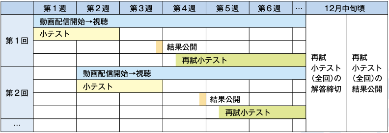

データサイエンス・リテラシー#
ようこそ．このウェブサイトは，名古屋市立大学の一般教養科目「データサイエンス・リテラシー」の講義ノートです．
本科目は，授業動画の視聴と小テストによって進めるオンデマンド型の科目です．この講義ノートは，授業動画の内容をより詳しく説明した補助資料という位置づけです．単位の認定は授業動画と小テストで行いますので，講義ノートを隅々まで読まなくても小テストには解答できます．そのうえで，「動画で聞いた話をもう一度確かめたい」「もう少し詳しく知りたい」と思ったときに，この講義ノートを開いてみてください．
開講情報#
項目 |
内容 |
|---|---|
実施時期 |
2026年度後期 |
科目区分 |
共通-情報（一般教養科目・必修） |
対象 |
データサイエンス学部を除く全学部の学部1年生 |
日時 |
時間割外 |
実施方法 |
遠隔授業（オンデマンド動画の視聴＋小テスト） |
科目概要#
私たちの身のまわりでは，買い物の履歴，スマートフォンの位置情報，SNSへの投稿など，毎日たくさんのデータが生まれています．そして，医療での画像診断の支援，災害時の被害予測，ネットショッピングのおすすめ表示，電車やバスの需要予測など，データを活用したサービスは，学部を問わずみなさんの生活や将来の仕事に深く関わるようになっています．このような社会では，データを専門的に扱う人だけでなく，すべての人がデータとの正しい付き合い方＝データサイエンス・リテラシーを身につけることが大切になります．
本科目では，データが生まれてから価値を生むまでの一連の流れ（データのライフサイクル）に沿って，データサイエンスの基礎を全8回で概観します．各回のテーマの詳しい技術には立ち入らず，「なぜそのテーマが重要なのか」を実社会の事例とともに理解することを目指します．
本科目の地図：データのライフサイクル
第1回でデータサイエンスの全体像をつかんだあと，第2〜6回でデータのライフサイクルを順にたどります．
収集（第2回）→ 保存・検索（第3回）→ 前処理（第4回）→ 分析（第5回）→ 可視化（第6回）
終盤の2回では，ライフサイクル全体に関わる横断的なテーマとして，データと法（第7回）と生成AI（第8回）を扱います．
小テストについて#
小テストの実施方法と合格の基準は次のとおりです．
各回の授業ごとに，学習内容を確認する小テストを実施します．
小テストの実施期間は授業開始日から2週間です．締切は締切日の23:59です．
小テストは60点以上で合格です．
全8回のうち5回以上合格点を取ることで，単位を認定します．
小テストの結果は，授業開始日の3週間後に発表する予定です．
60点未満だった場合は，再試を受験できます．再試は結果の発表後に実施します（締切は別途案内します）．
授業の予定とコンテンツ#
授業動画は，各回の授業開始日の1〜2日前に公開します．小テストは前節のとおり，授業開始日から2週間の間に受験してください．
動画の配信から小テスト・結果公開・再試までの流れは，次の図のようなスケジュールで毎回繰り返されます．たとえば第1回では，第1週に動画の配信と小テストが始まり，第2週の終わりに小テストが締め切られ，第3週の終わりに結果が公開されます．60点未満だった場合は，そのあとに実施される再試小テストを受験できます．第2回以降も，1週間ずつずれながら同じ流れで進みます．
{kind=link}

図 1 各回の動画配信と小テストのスケジュール#
各回の開始日・小テスト締切と，授業動画・資料へのリンクは，決まり次第この表に掲載します．
回 |
開始日 |
タイトル |
講義ノート |
動画・資料 |
小テスト締切 |
|---|---|---|---|---|---|
1 |
後日掲載 |
データサイエンスとは何か——ビッグデータとThick・Thinデータ |
準備中 |
後日掲載 |
|
2 |
後日掲載 |
データの収集 |
準備中 |
後日掲載 |
|
3 |
後日掲載 |
データの保存と検索 |
準備中 |
後日掲載 |
|
4 |
後日掲載 |
データの前処理 |
準備中 |
後日掲載 |
|
5 |
後日掲載 |
データの分析 |
準備中 |
後日掲載 |
|
6 |
後日掲載 |
データの可視化とコミュニケーション |
準備中 |
後日掲載 |
|
7 |
後日掲載 |
データと法——情報法の基礎 |
準備中 |
後日掲載 |
|
8 |
後日掲載 |
生成AIの基礎と知的活動への利用 |
準備中 |
後日掲載 |
この講義ノートの使い方#
この講義ノートは，次のことを意識して作られています．学習の際の参考にしてください．
どの章から読んでも構いません．ただし，第2〜6回はデータのライフサイクルの順につながっているため，順番に読むとより理解しやすくなっています．
各章の最初にある「この回で学ぶこと」で要点を確認し，最後の「まとめ」と「確認問題」で理解を確かめる，という使い方がおすすめです．確認問題は小テストと同じ形式の問いを含んでいます．
一部の章（特に第5回・第6回）には，プログラム（コード）とその実行結果が載っています．本科目ではプログラムを書けるようになる必要はありません．コードは「読んで，動かして，実感するための材料」ですので，眺めるだけで大丈夫です．
ページ上のグラフの一部は，マウスを重ねると値が表示されたり，拡大したりできる操作できるグラフになっています．ぜひ自分の手で動かしてみてください．
もっと試してみたい人は，コードが載っているページの上部にあるボタンからGoogle Colaboratoryを開くと，ブラウザ上でコードを書き換えて実行できます（準備ができ次第，利用できるようになります）．
各章の「さらに学ぶために」には，その回のテーマの元になった文献を紹介しています．興味を持ったテーマを深掘りする入口として活用してください．
問い合わせ#
本科目に関する質問は，担当教員までお問い合わせください．
担当教員：山本 祐輔（名古屋市立大学 大学院データサイエンス研究科）
E-mail：yusuke_yamamoto (at) acm.org